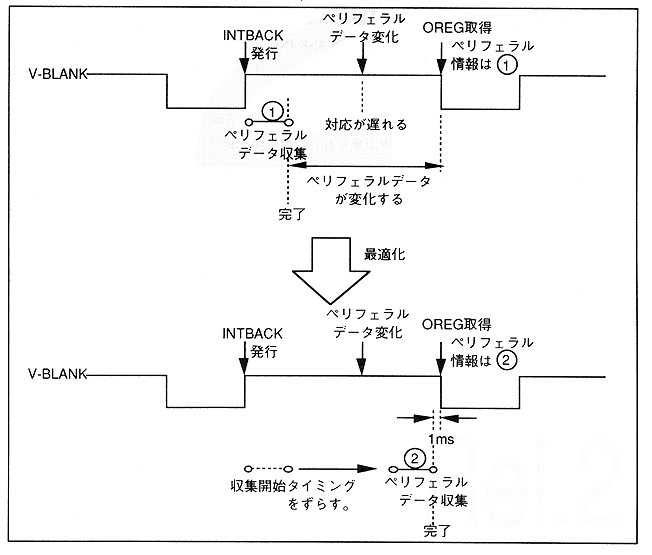

The purpose of optimizing the peripheral data collection time is to collect peripheral data at a timing as close as possible to V-BLANK-IN. In other words, start collecting peripheral data as close to V-BLANK-IN as possible, and minimize the time from peripheral data collection until SH-2 acquires the peripheral data. Figure 3.5 shows an overview of the peripheral data collection time optimization operation.
Figure 3.5: Overview of peripheral data collection time optimization
